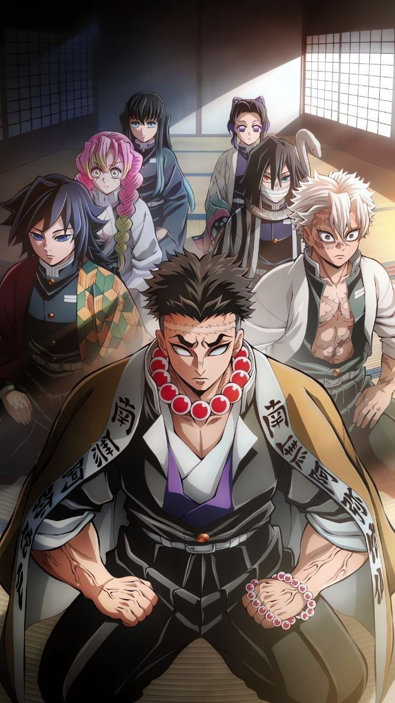

Після напружених битв у Деревні ковалів, Танджіро та його товариші вступають у новий етап підготовки — Тренування Хашира. Це сувора програма, ініційована керівником Корпусу винищувачів демонів Кагаєю Убуясікі, з метою зміцнення фізичних і бойових навичок усіх учасників. Навіть самі Хашира — найсильніші мечники організації — беруть участь у тренуваннях, щоб підвищити свою майстерність і координацію перед неминучою битвою з Мудзаном Кібутсудзі.
Танджіро проходить інтенсивні тренування під керівництвом кожного з Хашира, включаючи Тенґена Узую, Муїчіро Токіто, Міцурі Канроджі, Обаная Іґуро, Санемі Шінадзуґаву та Ґьомея Хімеджіму. Кожен з них пропонує унікальні методи навчання, спрямовані на розвиток витривалості, швидкості, техніки меча та сили духу. Ці тренування не лише зміцнюють фізичні можливості Танджіро, але й допомагають йому глибше зрозуміти характер і досвід кожного з Хашира.
Цей сезон слугує своєрідним "затишшям перед бурею", готуючи героїв до вирішальної сутички з Мудзаном. Тренування Хашира не лише підвищують бойову готовність винищувачів демонів, але й зміцнюють їхню рішучість та єдність. Це період глибокого самопізнання та зростання, який підкреслює важливість співпраці та взаємної підтримки у боротьбі зі злом.